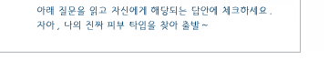

|
|
||||||||||||||||||||||||||||
|  | ||||||||||||||||||||||||||||
1. 얼굴에 기름기가 많아 늘 번들거린다.
2. 얼굴이 자주 빨개진다.
3. 얼굴에 하얀 각질이 잘 일어난다.
4. 피부가 얇은 편이며 화장이 잘 먹는다.
5. 팔이나 다리에 닭살이 있다.
6. 얼굴에 희게 버짐이 잘 생긴다.
7. 세수 후 얼굴이 당기거나 각질이 일어난다.
8. 얼굴에 여드름이 잘 생긴다.
9. 겨울에 찬바람을 맞으면 얼굴이 잘 튼다.
10. 코 주변에 까만 점 같은 것이 많다.
11. 얼굴 피부는 좋은데 잔주름이 잘 생긴다.
12. 얼굴에 뾰루지가 잘 생긴다.
13. 머리가 가렵고 비듬 같은 것이 잘 생긴다.
|
||||||||||||||||||||||||||||